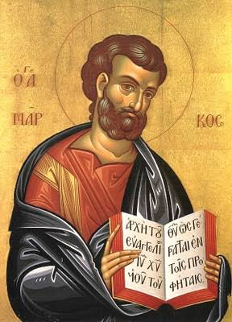

Bienvenue à notre paroisse

Chers frères et sœurs,
Bienvenue à la Paroisse Saint-Marc des Toits-Rouges. Ensemble, prions, célébrons et bâtissons une Église vivante, fraternelle et missionnaire.
Découvrir la paroisse →Bienvenue sur le site de la Paroisse Saint-Marc des Toits-Rouges. Retrouvez nos célébrations, nos actualités et les informations qui font vivre notre communauté.
Découvrez le saint célébré aujourd’hui

Bienvenue à la Paroisse Saint-Marc des Toits-Rouges. Ensemble, prions, célébrons et bâtissons une Église vivante, fraternelle et missionnaire.
Découvrir la paroisse →Chargement des dernières annonces paroissiales…
Découvrez nos prêtres, les CEB, les chorales, les mouvements et les services paroissiaux.
En savoir plus →Retrouvez les informations pratiques concernant le baptême, le mariage, la première communion et la confirmation.
En savoir plus →Soutenez la mission de la paroisse par vos dons, vos intentions de messe et votre engagement.
Participer →Choisissez une rubrique pour accéder directement aux informations souhaitées.
Consultez les informations de la paroisse.
Découvrir →Consultez les informations de la paroisse.
Découvrir →Consultez les informations de la paroisse.
Découvrir →Consultez les informations de la paroisse.
Découvrir →Consultez les informations de la paroisse.
Découvrir →Consultez les informations de la paroisse.
Découvrir →Consultez les informations de la paroisse.
Découvrir →Consultez les informations de la paroisse.
Découvrir →Consultez les informations de la paroisse.
Découvrir →Consultez les informations de la paroisse.
Découvrir →